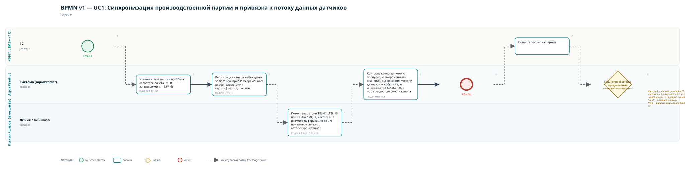
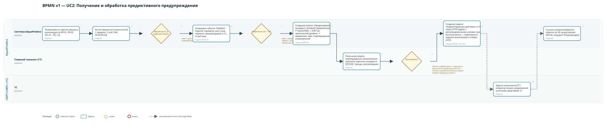
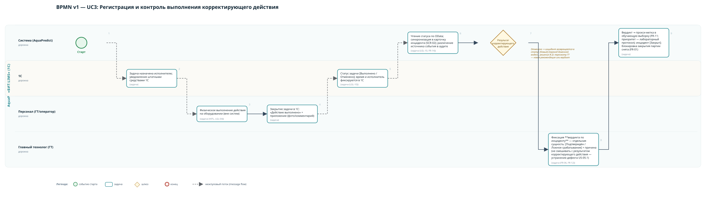
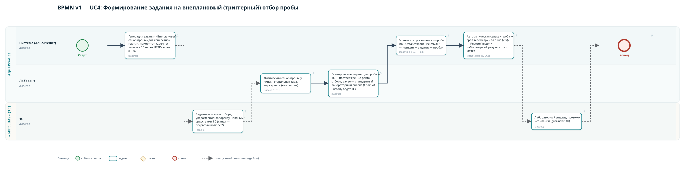
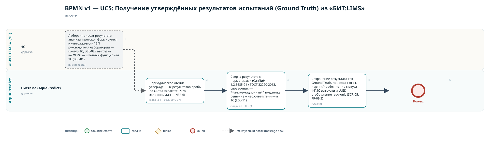
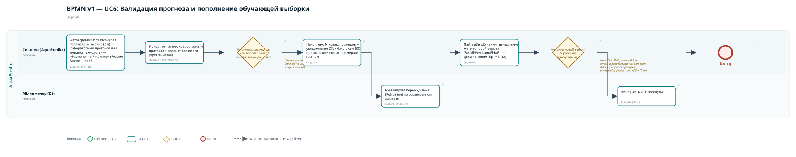
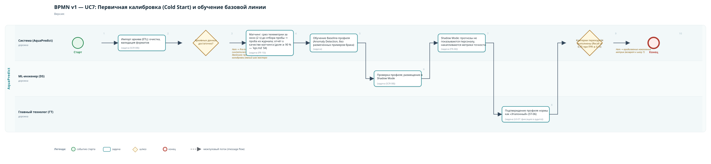
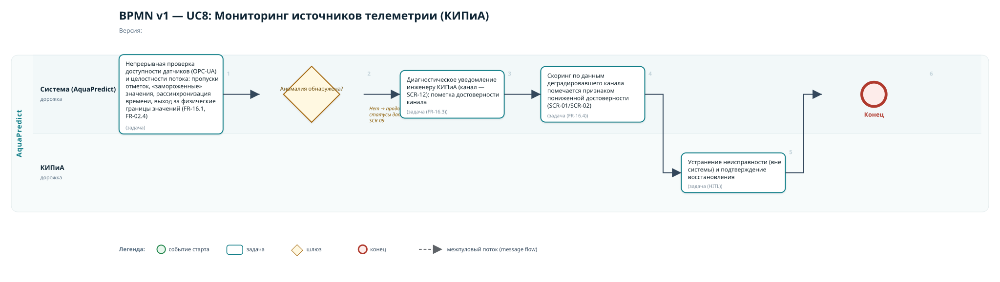

Схемы построены из текстовых спецификаций bpmn_ucX.md (пулы/дорожки, события, задачи, шлюзы, межпуловые потоки). Для редактируемого BPMN 2.0 откройте спецификации в bpmn.io / Camunda Modeler.
Репозиторий проекта: github.com/igorvolk1961/water_checker · [презентация] · [слайды защиты]
Редактируемые BPMN 2.0 (открывать в bpmn.io / Camunda Modeler): UC1 · UC2 · UC3 · UC4 · UC5 · UC6 · UC7 · UC8
FR-01, FR-02, FR-15 · дорожки: 1С, Система, Линия/шлюз

FR-05/06/12 · дорожки: Система, ГТ, 1С

FR-06, LGL-10 · дорожки: Система, Персонал, ГТ, 1С

FR-07, FR-08 · дорожки: Система, Лаборант, 1С

FR-08/09, LGL-01/02/07 · дорожки: 1С (лабораторный контур), Система

FR-11/12, LGL-13 · дорожки: Система, ML-инженер

FR-04/10 · дорожки: Система, DS, ГТ

FR-16, NFR-2 · дорожки: Система, Инженер КИПиА

docs/system_analysis/diagrams/bpmn_ucX*.md.